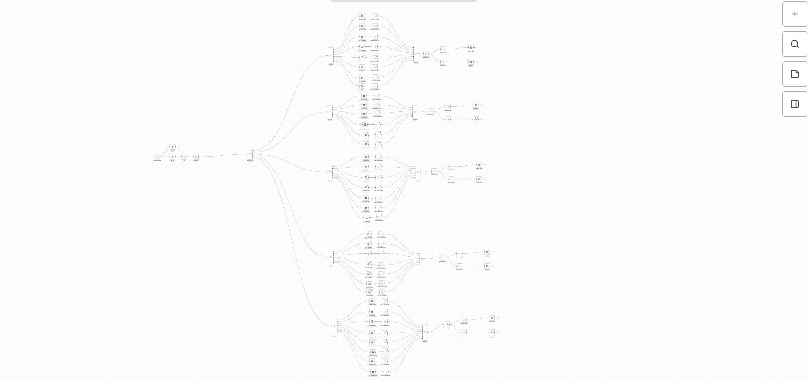
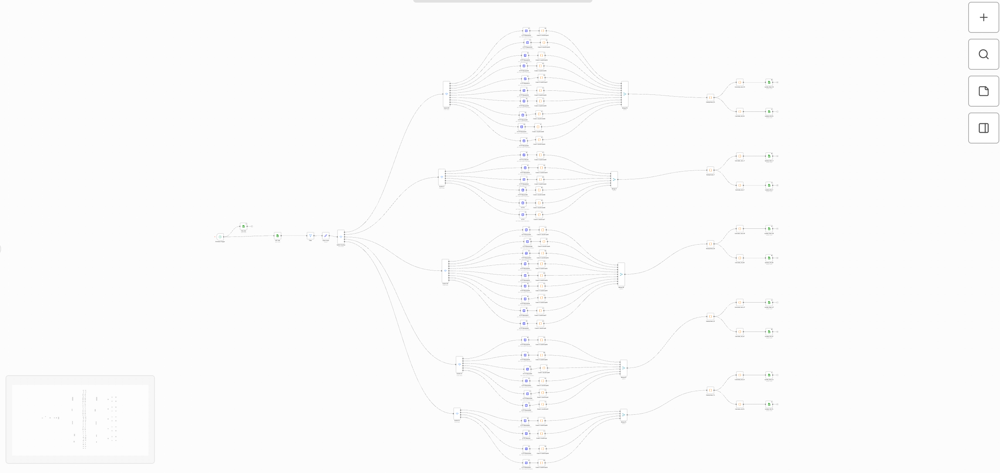
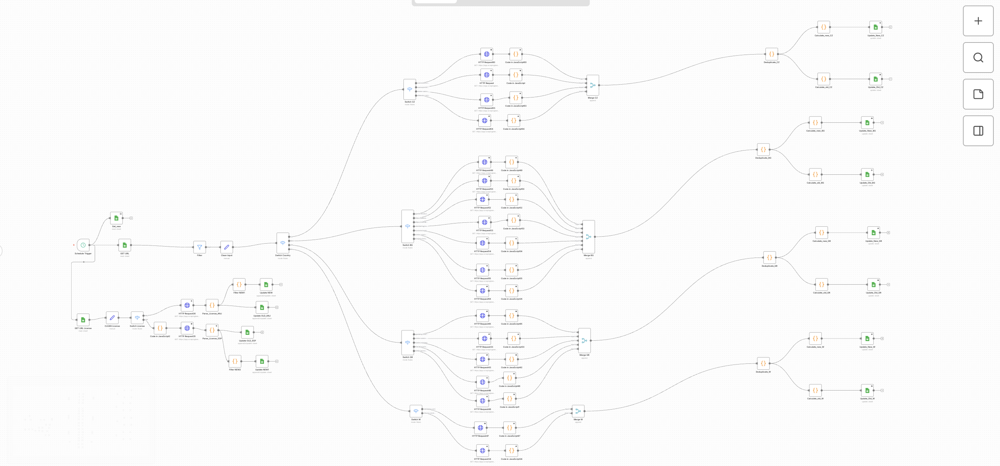
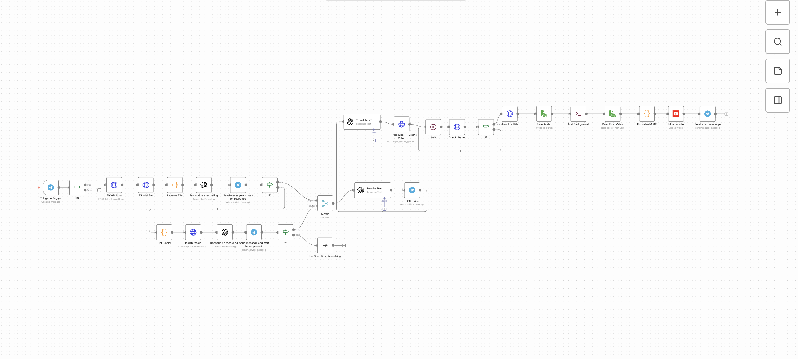
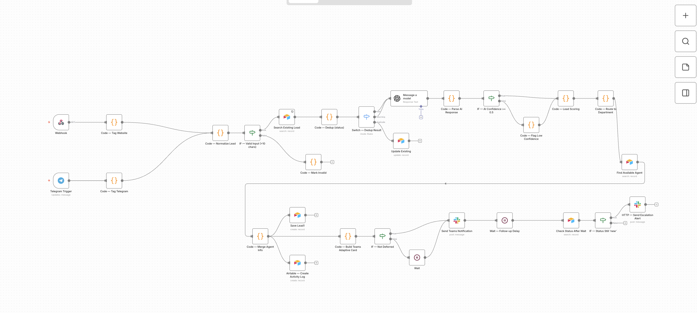
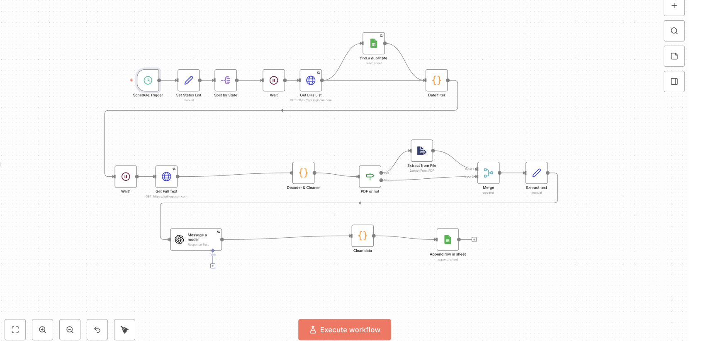
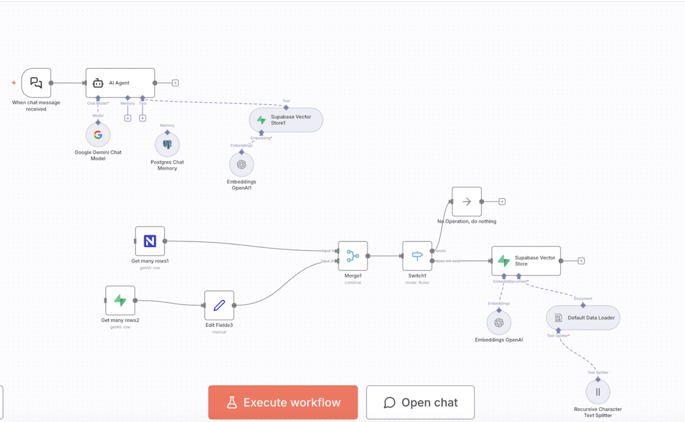

I turn manual operations into stable automated systems. I design, deploy and maintain complex multi-step workflows in n8n with AI, CRM, API and infrastructure integration.
I specialize in n8n — a tool that gives full control over automation: logic, APIs, data and AI in one pipeline. I work with real business tasks: freeing teams from manual operations, connecting services and building systems that run predictably and reliably. Every project starts with understanding the process, not just the technology.
Built on OpenClaw — an autonomous AI research agent that runs 24/7 on a VPS. Accepts text and voice messages in Telegram, plans the research itself, searches the web, analyses sources and produces structured reports on any topic.
Multi-level workflow with parallel processing of dozens of sources. Screenshots show the scale: parallel branches, HTTP requests, Code nodes, aggregation and deduplication.



Pipeline that takes a TikTok video via Telegram, transcribes the speech, translates it and re-creates the video with a synchronised AI avatar in another language.

Multi-source lead qualification funnel: deduplication, AI confidence scoring, department routing, automatic escalation on low confidence.

Automated monitoring of US legislative bills: schedule → LegiScan API → filter → PDF extract → GPT analysis → Google Sheets log with deduplication.

Corporate AI agent with a vector knowledge base. Chat input → semantic search in Supabase Vector Store → contextual LLM answer. A separate workflow syncs Notion data into vectors.

Media Buyer Facebook Ads — Infinity Traffic (Jun 2023 — Nov 2024)
This background gives strong expertise in analytics, hypothesis testing and a data-driven approach — directly applied when designing robust automations.
Tell me about your process — I'll suggest the shortest path to a working automation.